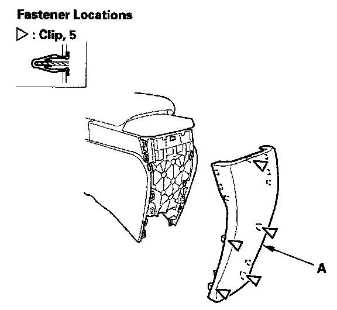
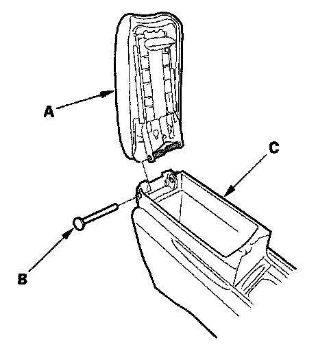

Center Console Armrest Replacement
Center Console Armrest ReplacementFor Some Models
NOTE: Take care not to scratch the armrest, center console, and related parts.
1. Remove the center console.

2. Gently pull out the center console rear cover (A) to detach the clips.

3. Open the armrest (A), pull the pin (B) off the armrest, then separate the armrest and center console (C).
4. Install the center console armrest in the reverse order of removal and check if the clips are damaged or stress-whitened, and if necessary, replace them with new ones.